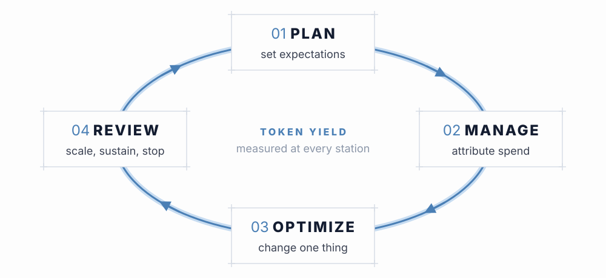
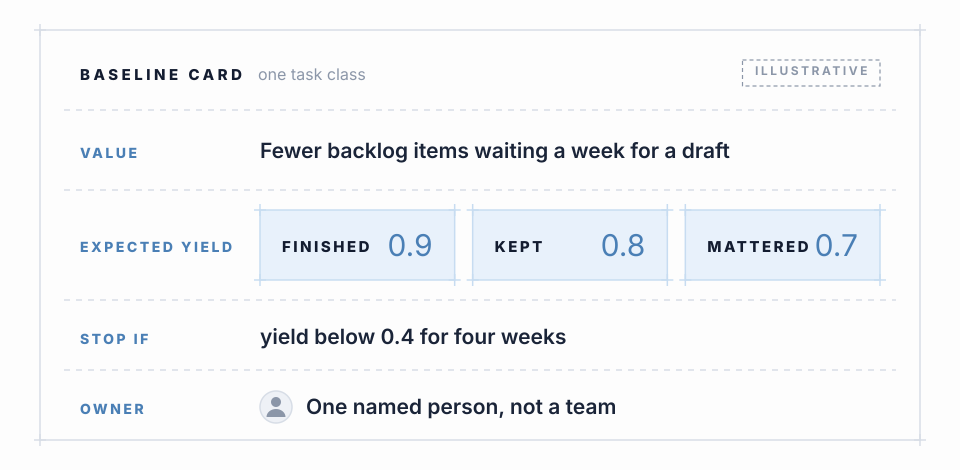

A loop, not a launch
Most AI spend starts with a number: a monthly cap, a pilot allowance, a line in someone’s budget. That number says how much may be spent. It says nothing about what the spend is supposed to buy, or how anyone would know whether it bought it. Months later the team can report that it stayed inside the cap, and nobody can say whether that was good news.
The four pages in this part use a plain structure I find useful for avoiding that outcome. Plan sets expectations before spend. Manage attributes spend as it happens. Optimize changes one thing at a time and checks whether yield moved. Review decides whether to scale, sustain or stop, and feeds the next plan. The names are my own shorthand for a loop, not a borrowed standard. Token yield, the measure from the earlier pages, runs underneath all four stations.

What a plan has to contain
A plan for agentic work needs three things written down, and a budget is only one of them.
- A cost envelope. What you expect to spend per unit of work, and the assumptions behind it: which models, what token mix, how much of the input you expect to be cached.
- A value hypothesis. What the work is for, stated as something a person outside the team could check. “Faster delivery” is a wish. “Fewer backlog items waiting more than a week for a first draft” is a hypothesis.
- An accepted yield. The share of spend you expect to convert into outcomes, and the floor below which you would change course.
The third item is the one that tends to be missing, and it is the one the rest of the loop depends on. Without it, Review has nothing to compare against, and every result looks acceptable after the fact.
Expected yield in three plain questions
The yield measures on the Agentic Loop page translate into three questions a planner can answer before any data exists. Did the work finish without a human taking over (ACR)? Was the output kept rather than discarded or reworked (TER)? Did the kept output matter to someone downstream (VGR)? The product of the three is the Agent Efficiency Score. A plan puts an expected value against each, a floor under each, and a name against the whole thing.

The numbers on a baseline card are guesses written down so they can be checked. Nobody yet knows what a normal yield looks like for a given class of agentic work. Writing the guess down anyway is the point: a guess you can compare against is more useful than a measurement you never planned to take.
Plan price and yield separately
The Reframe page split two risks that are easy to merge. Price risk is what each token costs: rates, the mix of token classes, cache behaviour. Yield risk is whether the tokens produced anything worth keeping. A plan should carry a separate assumption for each, because they fail for different reasons and are fixed by different people. If the cost envelope assumes a cached-input share and the real share comes in lower, that is a price assumption that broke. If the work finishes but nobody uses it, that is a yield assumption that broke. Merging the two into one cost-per-outcome forecast makes it impossible to tell later which one went wrong.
Pick the unit before you pick the number
Plans fail quietly when the unit is too coarse. A single yield figure for “all of our agent use” averages a task class that works well with one that burns money, and the average hides both. Plan per task class: a recognisable kind of work, such as drafting tests for a changed module or triaging incoming tickets, that runs often enough to produce a pattern. Each class gets its own card, its own floor and its own owner. The owner is a person, not a team, so that when a signal fires on the Manage page there is someone whose job it is to look.
Write the stop condition now
The hardest decision in the loop comes at Review, when a task class has been running for a while and has people attached to it. The plan is the cheapest place to make that decision easier. State in advance what result would cause you to stop: a yield floor held over a stated period, after a stated number of attempts to improve it. Agreeing that rule while nobody has anything to defend costs very little. Agreeing it afterwards costs a great deal.
GO DEEPER: where the shadow price μ fits in a plan
The budget in a plan is the constraint that the shadow price μ is defined against. Early in a piece of work, with most of the budget unspent, μ is designed to sit low, and most upgrades pass the Value of a Token test. As spend burns down faster than value arrives, μ is designed to rise and the test tightens. A plan that records both the budget and the expected rate of value delivery gives μ something to be computed from. Specified, not yet measured: this is how the instrument is meant to behave, not a result observed on production workloads.
Sources
- 1FinOps Foundation, FinOps Framework (planning and estimating, budgeting, and quantifying business value capabilities) – finops.org/framework